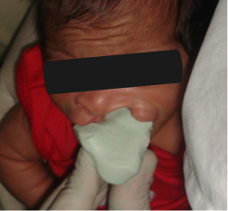

Ortodoncia y Ortopedia Maxilar
Antes de la cirugia para cerrar el paladar hendido, el odontopediatra deberá tomar impresiones y radiografías cefálicas laterales, para observar los cambios que vengan con el crecimiento y la cirugia.
El tratamiento se inicia con placas obturadoras palatinas, las cuales van a permitir la deglución y el desarrollo de las apófisis palatinas del maxilar superior y la oclusión dentaria.
La ortopedia realizada desde el primer mes hasta la cirugia tiene como objetivo un acercamiento y alineamiento de los segmentos fisurados, disminuyendo la tensión de las partes blandas.

Tomado: Clínica Posgrado de Ortodoncia, Universidad de Cartagena, Facultad de Odontología.
Se reconoce en la impresión un segmento menor colapsado y un segmento mayor desplazado hacia afuera.
Tomado: Clínica Posgrado de Ortodoncia, Universidad de Cartagena, Facultad de Odontología.
Se confecciona una placa por medio de desgastes de yeso y colocación de cera para estimular el crecimiento óseo hacia la línea media, sin colapsar el paladar procurando hacer que el resultado final sea lo más parecido a un paladar normal de esa edad.
Además se realiza lo que llaman tutor nasal cuya función será la de levantar la columnela nasal, estirar el ala nasal para mejorar los resultados de la plastia. Los resultados son estos:
Tomado: Clínica Posgrado de Ortodoncia, Universidad de Cartagena, Facultad de Odontología.